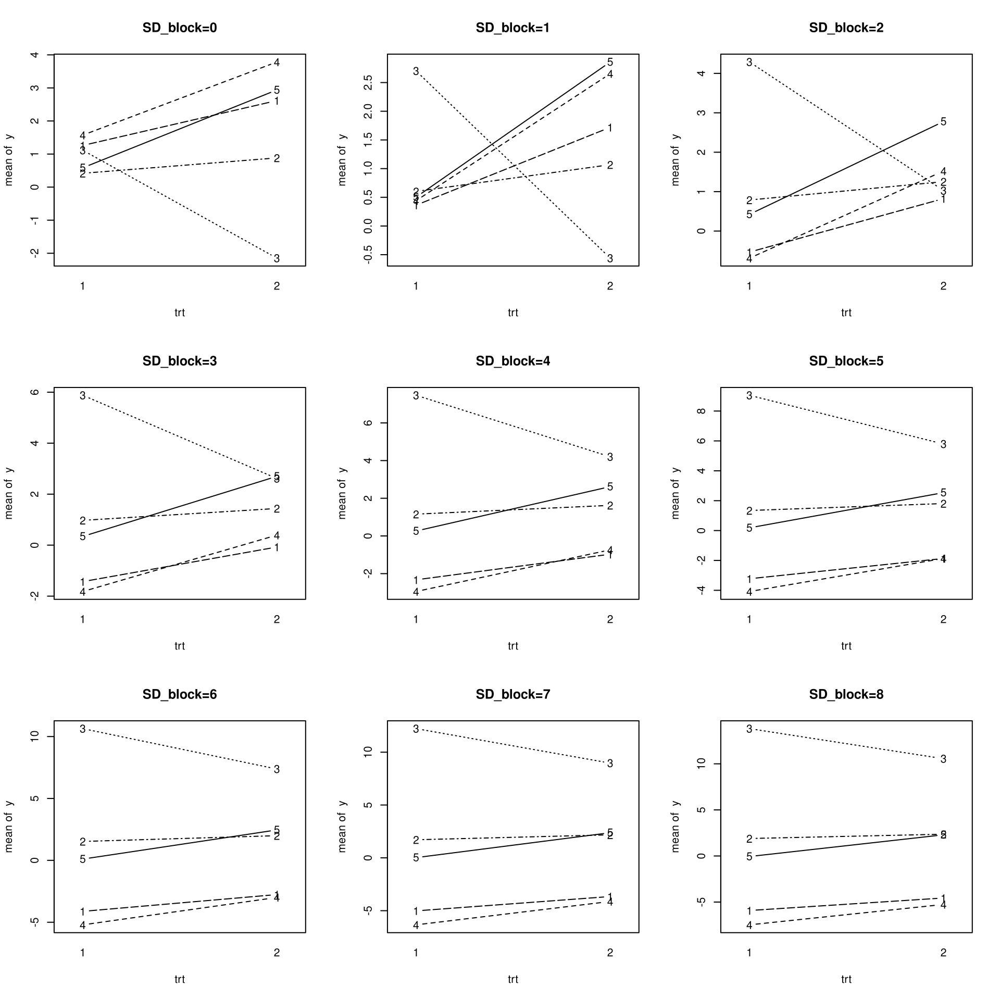
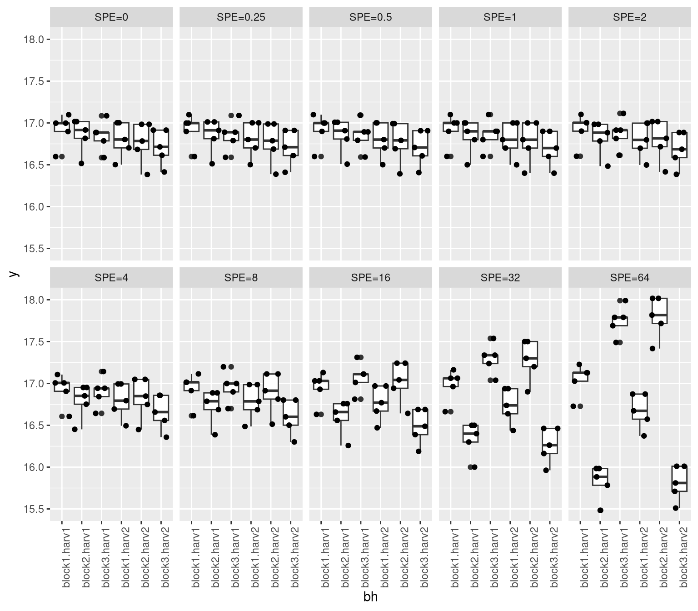

library(ggplot2)
library(gridExtra)
library(lmerTest)
library(multcomp)
options(contrasts = c("contr.sum", "contr.poly"))We study the classical setup of a randomized complete block design with 2 treatments, 2 replications per block and 5 blocks. We vary the variance of the block effect and study how the p-values of the treatment effect change.
\[ % equatiomatic::extract_eq(fit) \begin{aligned} \operatorname{y}_{i} &\sim N \left(\alpha_{block(i)} + \beta_{trt(i)}, \sigma^2 \right) \\ \alpha_{j} &\sim N \left(\mu_{\alpha_{j}}, {\sigma_{\alpha_{j}}}^2 \right) \text{, for block j = 1,} \dots \text{,5}\\ % contr sum for \beta_{trt(i)}: \beta_{1} &= - \beta_{2} \quad \text{(contr.sum)} \end{aligned} \]
TLDR
The p-values of the treatment effect are not influenced by the variance of the block effect in our example.
Simulate Data
# simulate data for a linear mixed model
# a randomized complete block design with 3 treatments, nblock blocks, nrep replicates per block
# an observation error with standard deviation SD_noise and a block effect with standard deviation SD_block
# a treatment effect with standard deviation SD_trt
get_data <- function(nblock=5, nrep=2, SD_noise=3, SD_block=1, SD_trt=0) {
data <- expand.grid(
nrep = 1:nrep,
trt = as.factor(1:2),
block = as.factor(1:nblock)
)
block_effect <- SD_block * rnorm(nblock)[data$block]
noise <- SD_noise * rnorm(nrow(data))
trt_effect <- SD_trt * rnorm(nrow(data))[data$trt]
data$y <- trt_effect + block_effect + noise
data
}Plot Function
# function that makes an interactions plot
plot_interactions <- function(data, ...) {
with(data,
interaction.plot(
x.factor = trt,
trace.factor = block,
response = y,
type = "b",
legend = FALSE,
...
)
)
}Perform Analysis
- Get Data that only differs with respect to SD_block (increasing)
- Plot the data for each SD_block
- Fit a model with lmer and lm for each SD_block
- inspect how the estimates and standard errors of the treatmenteffect change with increasing SD_block
SD_blocks <- 0:8
fits <- vector("list", length(SD_blocks)*2)
dim(fits) <- c(length(SD_blocks), 2)
dimnames(fits) <- list(paste0("SD_block=",as.character(SD_blocks)), c("lmer", "lm"))
par(mfrow=c(3,3))
for(i in seq_along(SD_blocks)){
SD_block <- SD_blocks[i]
set.seed(2)
data <- get_data(SD_block=SD_block)
plot_interactions(data, main=paste0("SD_block=", SD_block))
# lmer
fits[[i,1]] <- lmer(y ~ trt + (1|block), data=data)
# lm
fits[[i,2]] <- lm(y ~ trt + block, data=data)
}; par(mfrow=c(1,1))boundary (singular) fit: see help('isSingular')
boundary (singular) fit: see help('isSingular')
boundary (singular) fit: see help('isSingular')
# apply a function to each element of a list-array
# preserving the dimensions and dimnames
elementwise_apply <- function(L, f){
L_applied <- lapply(L, f)
dim(L_applied) <- dim(L)
dimnames(L_applied) <- dimnames(L)
L_applied
}
summary_coef_trt1 <- elementwise_apply(fits, function(fit) coef(summary(fit))["trt1",])Results
Illustration: How summary_coef_trt1 looks like:
summary_coef_trt1["SD_block=5",]$lmer
Estimate Std. Error df t value Pr(>|t|)
-0.3125844 0.8561637 14.0000000 -0.3650989 0.7204942
$lm
Estimate Std. Error t value Pr(>|t|)
-0.3125844 0.8561637 -0.3650989 0.7204942 # estimate
elementwise_apply(summary_coef_trt1, function(coef) coef[1]) lmer lm
SD_block=0 -0.3125844 -0.3125844
SD_block=1 -0.3125844 -0.3125844
SD_block=2 -0.3125844 -0.3125844
SD_block=3 -0.3125844 -0.3125844
SD_block=4 -0.3125844 -0.3125844
SD_block=5 -0.3125844 -0.3125844
SD_block=6 -0.3125844 -0.3125844
SD_block=7 -0.3125844 -0.3125844
SD_block=8 -0.3125844 -0.3125844# standard error
elementwise_apply(summary_coef_trt1, function(coef) coef[2]) lmer lm
SD_block=0 0.7997087 0.8561637
SD_block=1 0.7588929 0.8561637
SD_block=2 0.7842232 0.8561637
SD_block=3 0.8561637 0.8561637
SD_block=4 0.8561637 0.8561637
SD_block=5 0.8561637 0.8561637
SD_block=6 0.8561637 0.8561637
SD_block=7 0.8561637 0.8561637
SD_block=8 0.8561637 0.8561637# p-value
elementwise_apply(summary_coef_trt1, function(coef) coef[length(coef)]) lmer lm
SD_block=0 0.700479 0.7204942
SD_block=1 0.6852797 0.7204942
SD_block=2 0.6948831 0.7204942
SD_block=3 0.7204942 0.7204942
SD_block=4 0.7204942 0.7204942
SD_block=5 0.7204942 0.7204942
SD_block=6 0.7204942 0.7204942
SD_block=7 0.7204942 0.7204942
SD_block=8 0.7204942 0.7204942# random effect variance
sapply(fits[,1], function(fit) VarCorr(fit)$block[1]) |> sqrt() |> signif(2) SD_block=0 SD_block=1 SD_block=2 SD_block=3 SD_block=4 SD_block=5 SD_block=6
0.00 0.00 0.00 0.73 2.50 3.70 4.90
SD_block=7 SD_block=8
6.00 7.20 Split Plot
from: pbkrtest-paper section 3
Harvesting dates:
- 1: 2/10 - 2: 21/10
Plot allocation:
| Block 1 | Block 2 | Block 3 | Time | |
|---|---|---|---|---|
| Split-plots (1-15) | h1 h1 h1 h1 h1 | h2 h2 h2 h2 h2 | h1 h1 h1 h1 h1 | Harvesting |
| Sowing (1-15) | s3 s4 s5 s2 s1 | s3 s2 s4 s5 s1 | s5 s2 s3 s4 s1 | Sowing |
| Split-plots (16-30) | h2 h2 h2 h2 h2 | h1 h1 h1 h1 h1 | h2 h2 h2 h2 h2 | Harvesting |
| Sowing (16-30) | s2 s1 s5 s4 s3 | s4 s1 s3 s2 s5 | s1 s4 s3 s2 s5 | Sowing |
library(pbkrtest)
data("beets", package = "pbkrtest")
sug4 <- lmer(sugpct ~ block + sow + harvest + (1 | block:harvest), data = beets)
anova(sug4)Type III Analysis of Variance Table with Satterthwaite's method
Sum Sq Mean Sq NumDF DenDF F value Pr(>F)
block 0.01289 0.006447 2 2 2.5789 0.2794
sow 1.01000 0.252500 4 20 101.0000 5.741e-13 ***
harvest 0.03803 0.038026 1 2 15.2105 0.0599 .
---
Signif. codes: 0 '***' 0.001 '**' 0.01 '*' 0.05 '.' 0.1 ' ' 1beets$bh <- with(beets, interaction(block, harvest))
splitplot_effect <- getME(sug4, "Z") %*% getME(sug4, "b")
# remove splitplot effect from sugpct
beets$sugpct_without_splitplot <- beets$sugpct - splitplot_effect[,1]
sug_rm <- lmer(sugpct_without_splitplot ~ block + sow + harvest + (1 | block:harvest), data = beets)boundary (singular) fit: see help('isSingular')# SPE = Split Plot Effect
effect_multipliers <- c(0, 2^(-2:6))
names(effect_multipliers) <- paste0("SPE=", effect_multipliers)
sugpct_with_x_SPEs <- lapply(effect_multipliers, function(effect_multiplier) {
beets$sugpct_without_splitplot + effect_multiplier * splitplot_effect[,1]
})
# plot the data
plot_list <- list() # Create an empty list to store the plots
# Generate the plots and store them in the list
Dtmp <- cbind(beets, y = sugpct_with_x_SPEs[[1]], spe = rep(names(effect_multipliers)[1], nrow(beets)))
for(i in 2:length(sugpct_with_x_SPEs)){
Dtmp <- rbind(Dtmp, cbind(beets, y = sugpct_with_x_SPEs[[i]], spe = rep(names(effect_multipliers)[i], nrow(beets)))
)
}
Dtmp$spe <- factor(Dtmp$spe, levels = names(effect_multipliers))
ggplot(Dtmp, aes(x = bh, y = y)) + facet_wrap(~spe, nrow=2, ncol=5) + geom_boxplot() + geom_jitter()+
theme(axis.text.x = element_text(angle = 90, hjust = 1))
# for every entry in sugpct_with_x_SPE fit a mixed model and extract the p-value for the effect of harvest
sapply(sugpct_with_x_SPEs, function(sugpct_x_SPE) {
fit <- lmer(sugpct_x_SPE ~ block + sow + harvest + (1 | block:harvest), data = beets)
c(
harvest = anova(fit)["harvest", "Pr(>F)"],
sow = anova(fit)["sow", "Pr(>F)"]
)
})boundary (singular) fit: see help('isSingular')
boundary (singular) fit: see help('isSingular') SPE=0 SPE=0.25 SPE=0.5 SPE=1 SPE=2
harvest 1.999960e-06 2.561745e-06 3.051677e-02 5.989785e-02 1.357533e-01
sow 4.421957e-14 6.306219e-14 5.741161e-13 5.741161e-13 5.741161e-13
SPE=4 SPE=8 SPE=16 SPE=32 SPE=64
harvest 3.002927e-01 5.340510e-01 7.360846e-01 8.617984e-01 9.297002e-01
sow 5.741161e-13 5.741161e-13 5.741161e-13 5.741161e-13 5.741161e-13# analog but using the lm function
sapply(sugpct_with_x_SPEs, function(sugpct_x_SPE) {
lm(sugpct_x_SPE ~ 0 + bh + sow, data = beets) |>
glht(linfct = matrix(c(1,1,1,-1,-1,-1,0,0,0,0)/6, nrow = 1)) |>
summary() |>
coef()
}) #==> stays the same SPE=0.1 SPE=0.25.1 SPE=0.5.1 SPE=1.1 SPE=2.1 SPE=4.1 SPE=8.1
0.05666667 0.05666667 0.05666667 0.05666667 0.05666667 0.05666667 0.05666667
SPE=16.1 SPE=32.1 SPE=64.1
0.05666667 0.05666667 0.05666667